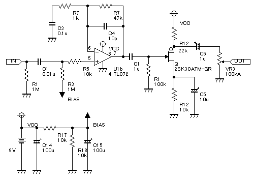
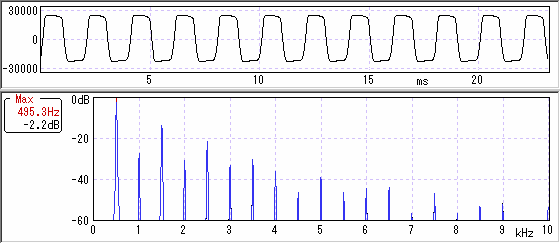
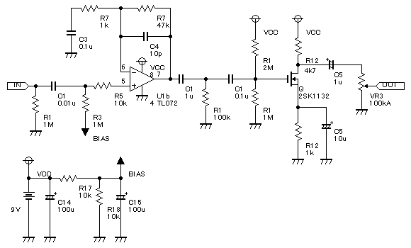
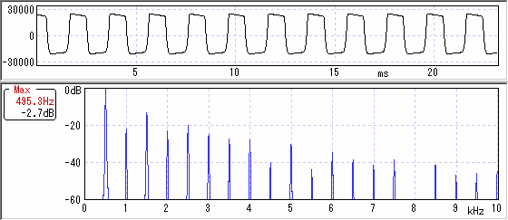

歪みと波形・倍音その2（FET）
2007年10月05日 カテゴリー：歪みと波形・倍音
前回に続き他の回路で波形や倍音を調べてみました。例のごとく回路図が正しいという保障はありません。ありあわせの部品で組んだので定数が引用元と異なる場合があります。
歪みと波形・倍音 記事一覧
・（たぶん）JFETの歪み
前回の回路にひよこのページのミニブースターを直結してみました。意外と歪みます（IC部分ではほとんど歪んでないはず）。


今までに無い波形です。LEDより少しだけ丸みがあるようです。倍音はシリコン非対称と似てます。
・（たぶん）MOSFETの歪み
歪み歪め歪んでくれのSuper Edge 2というファズを参考に、MOSFETをつなげてみました。JFETのときより歪んでます。


ちょっと角ばっていて非対称っぽいです。ICの歪みに似てます。
・総評（のようなもの）
いろいろ測ってみましたが前回のシリコンダイオードが一番無難かもしれません。本当は奇数次倍音が少ないのを見つけたかったんですが…
ただ上記2つの歪みはなかなか面白そうなので、ちゃんと勉強していつか1つのエフェクターとして作ってみたいですね。